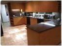
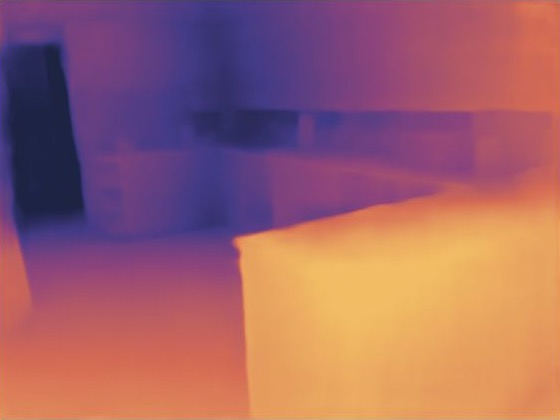
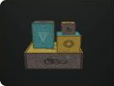
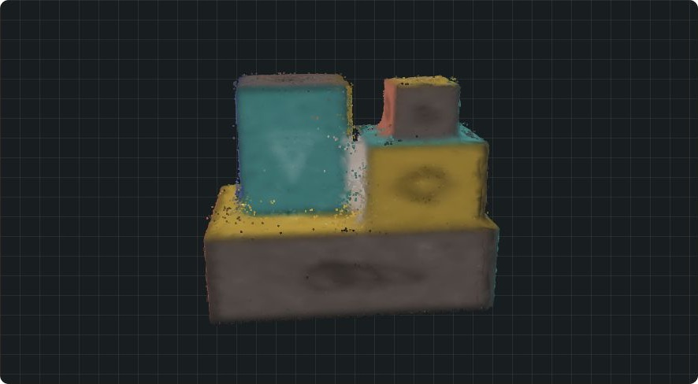

CASE 10
Depth estimation and 3D reconstruction
Estimate depth from a kitchen photo, or turn a short video taken around a stack of blocks into a 3D model you can rotate.
Explore the kitchen photo
Choose the built-in kitchen image. Compare the photo with the depth map, then move the focus point to see how foreground and background blur changes. The workbench reported 0.86 seconds of model inference for this image.

Kitchen photo
Estimated depth. The nearby counter appears warm, the distant doorway cool.Reconstruct the blocks
Choose the built-in eight-second orbit video. In our demo run, the workbench aligned all 80 views and reported 63.1 seconds for reconstruction. Rotate the result and switch between the color point cloud and the surface to inspect the blocks from different angles. The reconstruction shows their relative scale.

Reference frame from the orbit video
Reconstructed 3D surface of the blocks, shown at relative scale.Open the depth workbench